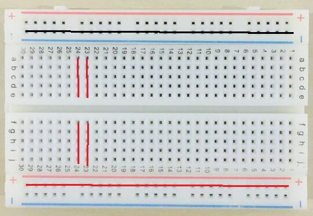
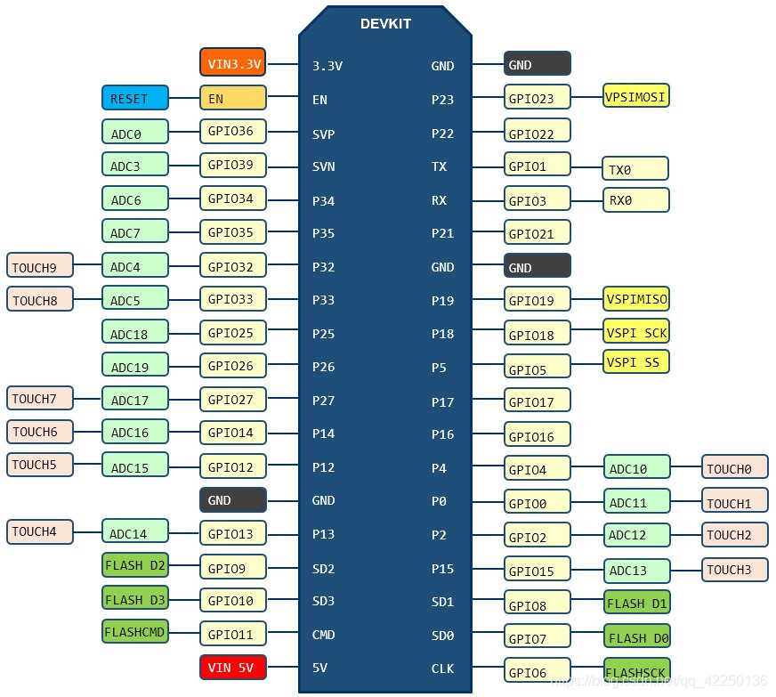
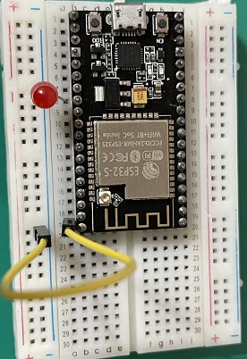
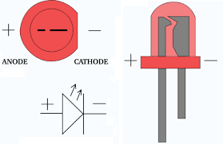
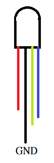

麵包板上有很多小插孔，可將各種電子元件根據需要進行插入或拔出，免去焊接的程序。如下圖所示，在麵包板的上下兩側分別有兩排插孔，一般是作為電源引入的通路，上方第一行標有「+」的一列，每組5個插孔連通均為正極。上方第二行標有「-」的一列，每組5個插孔均為接地，麵包板下方第一行與第二行結構相同。
中間連接孔分為上下兩部分，是我們的主要的工作區域，用來插接元件和跳線。在同一直排的的5個插孔（即a-b-c-d-e，f-g-h-i-j）是互相連通的；直列和直列（即1-30）之間以及凹槽上下部分（即e-f）是不連通的。

課程開發工具Arduino IDE使用C語言進行物聯的開發，在進入控制晶片的使用與各項應用前，課程先對C語言進行簡述。
; 符號標示命令結束，條件、迴圈與函數的命令會置於 { } 符號之間。程式利用變數儲存讀入或計算資料值，C語言便數名稱區分大小寫，也就是變數a與變數A為不同變數。
char a='A';
int b=5;
float c=3.14;
bool d=true;
string e="長榮中學";
int b; //宣告整數變數b
int a=0; //a值為0
a=a+5; //a值為5
a=a-3; //a值為2
a=a*2; //a值為4
a=a/4; //a值為1
b=a%5; //b值為1
int a=0; //a值為0
if (a==0) {
a=1;
} else {
a=2;
}
int a=3; //a值為3
if ((a!=0) && (a%2==0)) {
a=1;
} else {
a=2;
}
if條件命令包含 if、if else、if else if else，分別為一個條件動作、兩個條件動作與多個條件動作。
//if
if (1<2) {
Serial.print("1小於2");
}
//if else
if (1<2) {
Serial.print("1小於2");
} else {
Serial.print("1不小於2");
}
//if else if else
if (1>2) {
Serial.print("1大於2");
} else if (1==2) {
Serial.print("1等於2");
} else {
Serial.print("1小於2");
}
swicth執行多條件命令。
//swicth 每個值至於 case之後，default為所有條件不滿足，每個動作需加break
int x=1;
switch (x) {
case 3:
Serial.print("x為3");
break;
case 2:
Serial.print("x為2");
break;
default:
Serial.print("x不為2或3");
}
迴圈命令包含 while、do while、for，while、do while差別 結束條件在一開始或結束條件在最後，for迴圈使用方式 for (int 變數=起始值;變數結束條件設定;變數增加值設定)。
//while印出1到10數字
int i=1;
while (i<=10) {
Serial.print("{0,2:d}",i);
i=i+1;
}
//do while印出1到10數字
i=1;
do {
Serial.print("{0,2:d}",i);
i=i+1;
} while (i<=10);
//for印出1到10數字
for (i=1;i<=10;i++) {
Serial.print("{0,2:d}",i);
}
了解如何使用麵包版後，在進行物聯操作時，要確定所有的零件極性(正極或負極)與負載(超載會燒壞零件)，電流由正極流向負極，接好所有線路，確認後再進行通電(接上USB)，這樣可以避免因操作不當，將開發版或零件燒毀，要進行線路的更動時，一定要將開發版斷電(拔除USB連接線)。
進行物聯設計之前，必須了解開發版的功能及其對應腳位，下圖為課程使用ESP32開發版(NodeMCU 32s)腳位圖：

Arduino IDE常用命令將依照不同目的進行介紹。
數位腳位輸出或輸入：在Arduino要進行數位腳位輸出或輸入，先必須使用命令 pinMode(數位腳位號碼,INPUT或OUTPUT) 進行數位腳位設定，設定為 INPUT 代表要從該數位腳位讀入數位訊號(HIGH或LOW)，其中 HIGH 代表有通電，LOW 代表關沒通電。設定為 OUTPUT 時，代表要從該數位腳位輸出數位訊號(HIGH或LOW)，其中 HIGH 代表有開通電，LOW 代表關沒通電。設定完畢後，可以透過 digitalWrite(數位腳位號碼,HIGH或LOW)、digitalRead(數位腳位號碼) 來輸出或讀入數位訊號。以下圖控制LED為例，LED正極(長腳)接在控制晶片數位腳位16，負極(短腳)接地在回到控制晶片接地腳位(GND)，要進行下圖控制，首先必須設定 pinMode(16,OUTPUT) ，代表透過控制數位腳位16輸出的 HIGH 或 LOW，可以控制電流是否通過LED。設定完畢後，透過 digitalWrite(16,HIGH)來開啟LED，透過 digitalWrite(16,LOW)來關閉LED。程式中 delay(2000) 代表等待2000毫秒(2秒)。

程式碼：
void setup() {
pinMode(16,OUTPUT);
}
void loop() {
digitalWrite(16,HIGH);
delay(2000);
digitalWrite(16,LOW);
delay(2000);
}
第一個Arduino IDE程式使用預設數位輸出腳位(GPIO2或LED_BUILTIN)控制開發版上預設LED以1秒間格進行閃爍。請開啟Arduino IDE後，選擇 檔案/範例/01.Basics/Blink 。Arduino程式包含兩個無傳回值(void)函數 setup()與loop()，setup()用於開發版啟動時的設定，只會執行一次，之後開發版將重複執行loop()函數中的命令，兩個函數的所有命令均需置於{ } 符號之間。程式包含三個Arduino命令：pinMode、digitalWrite、delay。pinMode命令用於設定GPIO腳位的模式，需要兩個代入值分別為 GPIO腳位 與 腳位模式(INPUT或OUTPUT)，程式中 LED_BUILTIN 為系統預設代表GPIO2腳位，使用者可以用 2 取代 LED_BUILTIN，執行完 setup() 之後，程式將開發版GPIO2腳位設定為可輸出。
執行完 set()函數之後，程式將重複執行 loop() 中命令，loop()中第一個命令為 digitalWrite(LED_BUILTIN,HIGH); ，digitalWrite命令需要兩個代入值分別為設定輸出的 GPIO腳位 與 輸出值(HIGH或LOW)，當輸出值為 HIGH 時，會開通對應的接腳，電流會從接腳輸出。當輸出值為 LOW 時，則關閉對應接腳的電流輸出。delay命令用於設定延遲，讓程式暫停一段時間，delay命令代入數字代表延遲時間，時間以毫秒(千分之一秒)表示，因此delay(1000)代表延遲1秒，因此Blink程式在開始 setup() 設定輸出腳位後，loop() 程式會開通開發版預設LED的GPIO接腳後，延遲1秒後，將其關閉並延遲1秒，之後繼續執行loop()函數。
知道如何開關開發版上LED之後，請將開發版USB連接線拔除，接下來我們將進行LED線路連接。LED有分正負極(如下圖)，長腳為正極，短腳為負極，電源由LED正極進入再由LED負極流出，LED有最大電流限制，超過電流會導致LED燒毀，所以接LED時需要再LED正端或負端串接一個電阻作為LED保護用。
請選擇可用GPIO腳位並修改上一個閃爍程式來控制外部LED，LED接線如下 LED正極 - LED負極 - 電阻 - GND(接地)，例如腳位設定為 GPIO22，當設定 digitalWrite(22,HIGH) 時，電流會從GPIO22腳位經過 LED正極 - LED負極 - 電阻 - GND(接地)。確定線路無誤後，再將開發版接上USB。
脈衝寬度調變(PWM)是一種利用數位訊號模擬類比訊號的方式。通常可以用於調整燈光的亮度、馬達的轉速、RGB LED 的配色、螢幕亮度控制、喇叭的大小聲/聲音頻率等。接下來實驗要利用脈衝寬度調變(PWM)讓LED有不同亮度變化，要使用PWM，開發版ESP32須執行下列兩個步驟。
ledcSetup(0,5000,8);
ledcAttachPin(22,0);
void setup() {
ledcSetup(0,5000,8);
ledcAttachPin(22,0);
}
void loop() {
ledcWrite(0,0);
delay(2000);
ledcWrite(0,125);
delay(2000);
ledcWrite(0,255);
delay(2000);
}
全彩(RGB)LED接腳如下圖：

全彩LED因為有三個輸入，因此必須串接3個電阻，請將全彩LED的 GND 接至開發版GND腳位，另外選擇三個GPIO腳位來串接紅(R)、綠(G)、藍(B)，開關或PWM設定同單顆LED。請注意：全彩LED會依紅(R)、綠(G)、藍(B)不同設定值而產生不同的顏色。
接上開發版後，使用者選擇 工具/序列埠監控視窗可開啟如下圖監控視窗，使用者可在Arduino程式利用 Serial.print()或Serial.println() 命令將答案輸出序列埠監控視窗，其目的是要透過監控視窗了解程式執行狀況。要使用序列埠，請在 setup()程式中設定 Serial.begin(序列埠傳輸速率); ，一般傳輸速率設為 115200，同時執行程式後，序列埠監控視窗下方速率請設成相同的速率(如115200baud)，否則就無法溝通。
Serial.begin(115200); ，接下來輸入命令 Serial.print("設定序列埠速度"); ，開啟序列埠監控視窗並確定傳輸速率為 115200baud，之後進行程式燒錄並觀看序列埠監控視窗輸出結果。
透過讀取電容接觸感測(Touch)腳位值來判定使否有接觸，實驗分為兩個部分，首先我們要知道當手接觸電容接觸感測(Touch)腳位時的數值是多少，接下來利用這個數值當作判斷基準來開關LED。要讀取電容接觸感測(Touch)腳位值使用 touchRead(腳位) 命令即可讀出該腳位現在值。